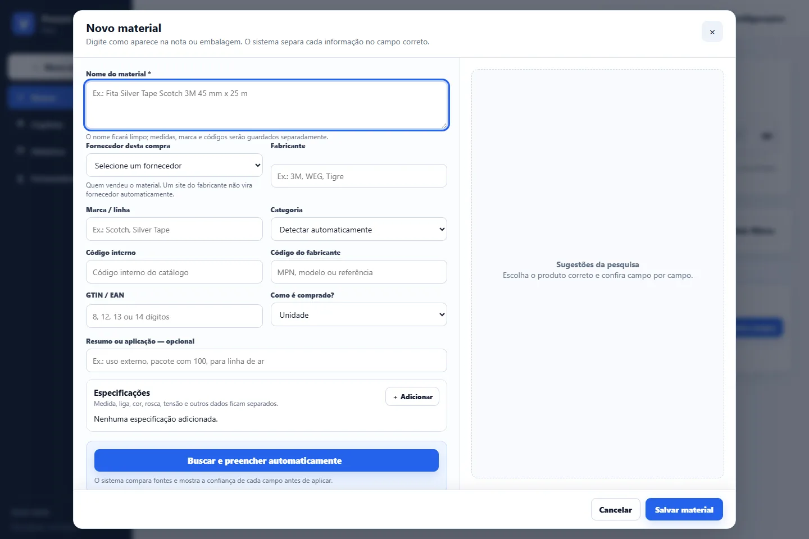

Problem
Finding a material required knowing which tab, family or description contained it. Concurrent edits could also overwrite recent changes.
PROCUREMENT SEARCH AND DATA
DAILY INTERNAL USEFastAPI, SQLite FTS5 and revision control
I turned a historical spreadsheet into a catalog searchable by code, name, specification or supplier, with history, backups and protection against silent overwrites.

CATALOG SCREENS

Origin
The base was maintained for approximately two years and now contains 24 operational categories and more than 480 material codes.
Privacy
Company prices, suppliers, histories and paths are not published.
Finding a material required knowing which tab, family or description contained it. Concurrent edits could also overwrite recent changes.
Unified search, material registration, purchasing history, latest price, suppliers, backups, optional OCR, import/export and revision control.
FastAPI serves the interface and API. Versioned JSON remains the readable source, while SQLite FTS5 works as a derived and rebuildable index.
Current scope
The catalog solves search, registration and history at the current scale. I do not present it as an ERP, fiscal module or payment platform.
Scaling further
A larger deployment would require a central transactional database, corporate identity, role-based authorization, HTTPS, observability and monitored backup policies.
This case presents a sanitized public version of a system used in the procurement routine.